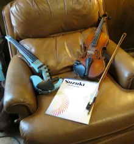

Materials
You will need a Suzuki Violin School volume 1, violin part, book and CD. You will also need a violin, violin bow, case and rosin. Things like tuners and metronomes are useful to have as well, but are not necessary at the beginning.
I would prefer that you meet with me before you choose an instrument. Many violin sellers size violins too big. Violin or string instrument specialists are faster at repairs and usually have better quality instruments, but you can get an adequate violin from most of the music shops. That said, you should make sure that you can exchange it if your teacher thinks there is something wrong. Buying a "violin shaped object" from Ebay is quite risky. Buying a used violin from someone who has taken lessons can be a good deal.
